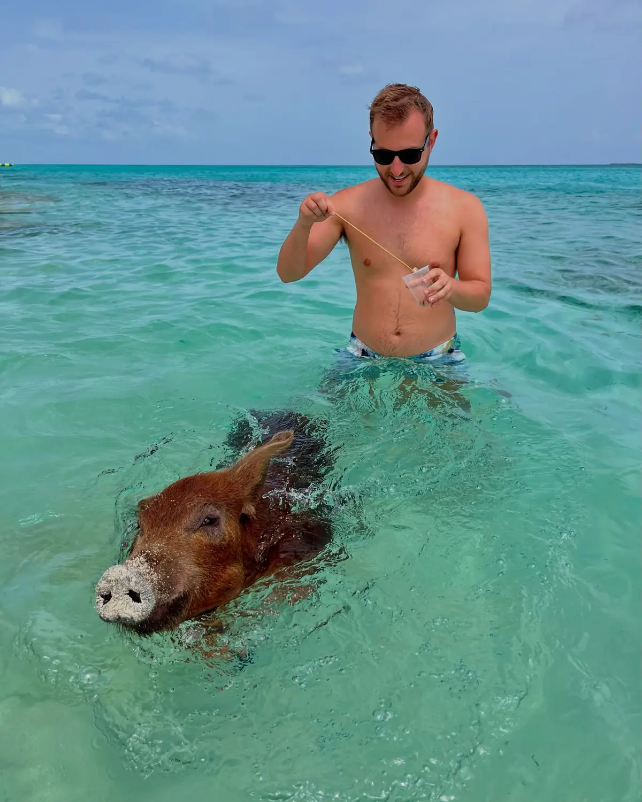
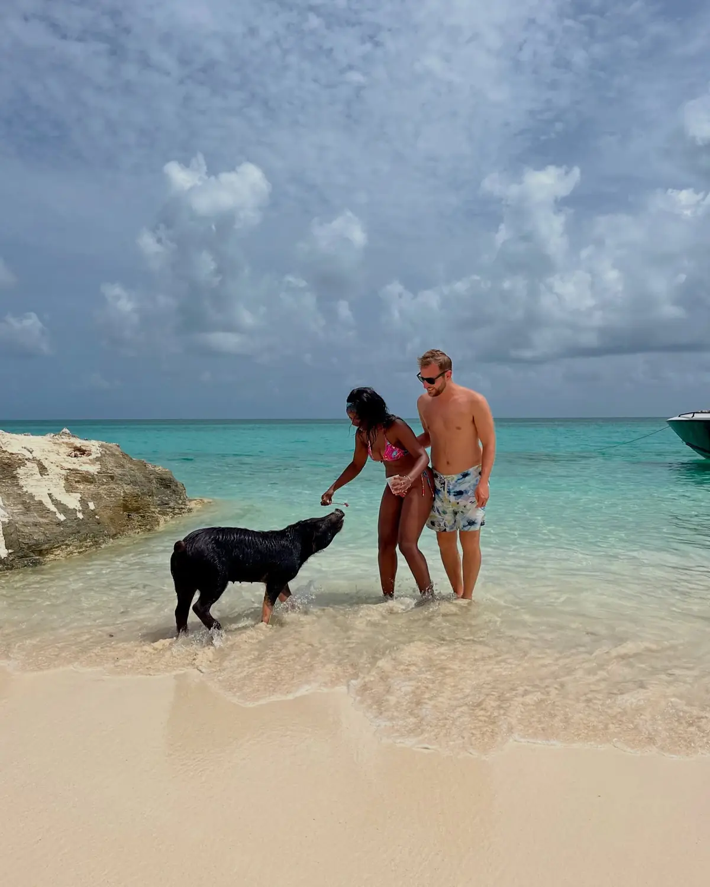

The highlight01
Swimming with the pigs
📍 The swimming-pig beaches · reached by boat from Nassau
This is the one you come for. You take a boat out to an uninhabited cay and the pigs come swimming straight out to meet you — big ones, little ones, black ones and ginger ones — bumping around your legs in the shallows for a snack. It's hilarious, a little chaotic, and honestly magical, all set in the clearest water imaginable. We'd 100% recommend doing it as a boat tour that folds in snorkelling and turtles too, so you get a whole day on the water for it.
Bring a GoProThey really do swim
GetYourGuide
We'd recommend